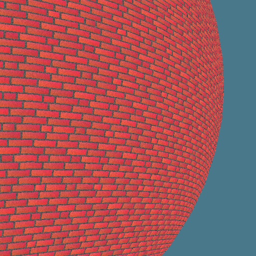
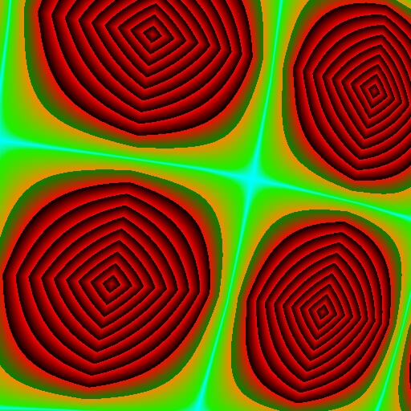
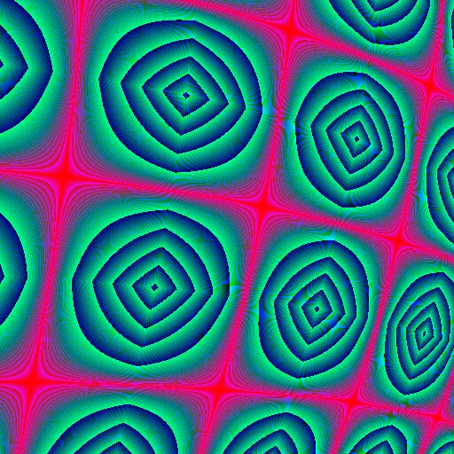
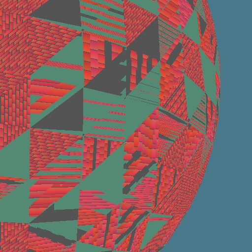

Face Procedural Texturing:
Given a position in 2 Dimensions (a face of an object) return the color of the surface at that point. This provides 'flat' textures, such as bricks, water, stone, dirt, bark, gravel, &c.

A brick texture. A pattern 8 layers high was designed, with variation in brick size and color. The position is mapped to this table and calculations determine if the point is on the brick or in the grout. If it is on a brick the color used is that brick's specific shade of red. Also, the color varies very slightly across the face of all bricks. This should be subtle enough for you not to notice, but adds variation. Noise, or randomness, is also used to provide a 'grainy' appearance to the bricks and grout.


These two images are produced with the same texture generator. The algorithm is simple: color_returned = color_scale * x_position * y_position. Mirroring provides a rectangular kaleidoscoping action. Each color component, red, green, and blue, has it's own scaling factor. Limiting the colors from looping, once overflowing the acceptable color range, provides interesting effects as seen in both these images. In the first, the blue and green components to not repeat. In the second, the red component does not repeat. The second image also displays a moiré effect on the blue channel. A moiré effect is a pattern which can be seen due to interference. In this case it is simple raster sampling aliasing which causes the effect. Notice that the blue does not follow the same contour lines as does the red and green. This moiré effect would shimmer uncontrollably in animation and also be affected by scale changes.

I never did fix my 3 sided polygon filler (I don't intend to in this codebase), but I thought the bricks looked particularly interested with this bug.
copyright 2/14/1999 Vince Scheib